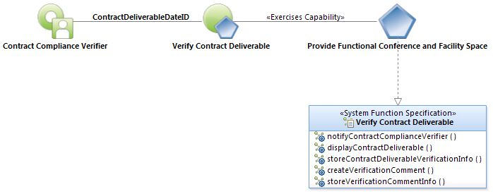
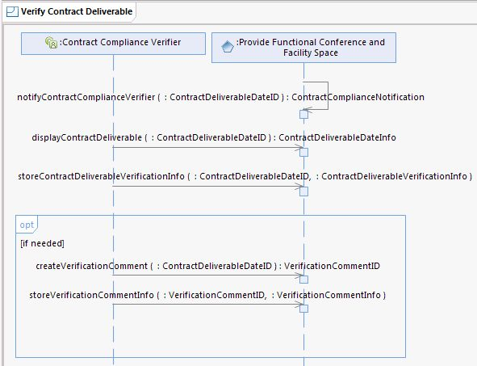

|
Verify
Contract Deliverable Use Case Specification
Last Modified: 6/30/2016
Select to
enlarge...

Verify Contract Deliverable Use
Case Model |
Scope: The system daily searches for Contract Deliverables past due
and sends a ContractComplianceNotification to the appropriate Contract
Compliance Verifier. Notification appears in the form of one email per
ContractDeliverable, stating a ContractDeliverable is past due and contains an
attached file. The Contract Compliance Verifier double-clicks the attached file
and is taken to a screen that displays ContractDeliverableInfo. The Contract
Compliance Verifier enters ContractDeliverableVerificationInfo and, if needed,
a VerificationComment.
Select to
enlarge...

Verify Contract Deliverable Sequence Diagram |
Table of
Interface Descriptions
| Type/Interface |
Description |
Provide Functional Conference and Facility Space/
notifyContractComplianceVerifier
|
The system daily searches for ContractDeliverablesDates with
a VerificationStatus value of 'Pending' or 'Not Received' that are past due.
Notification is sent to the appropriate Contract Compliance Verifier
(ApprovingReviewingEntity) via a ContractComplianceNotification, on the
DateDue, 7 days after the DateDue and 21 days after the DateDue. Notification
appears in the form of one email per ContractDeliverable, stating the
ContractDeliverable is past due and includes an attached file with instructions
to double-click the attachment and be directly taken to ContractDeliverableInfo
within the system. Notifications are discontinued when a DateDue 21 days past
the DateDue at which time the Contract Compliance Supervisor engages the
Contract Compliance Verifier in person to determine the reason why the
ContractDeliverable has not been Received.
|
Provide Functional Conference and Facility Space/
displayContractDeliverable |
The Contract Compliance Verifier double-clicks the file attached to
the ContractComplianceNotification and is taken to a screen within the
system displaying the following ContractInfo: ContractNumber and
ContractVendorName. The screen also displays the following
ContractDeliverableInfo: Title. The screen also displays the following
ContractDeliverableDateInfo: DateDue, ApprovingReviewingEntity. Note:
In addition to accessing the the system via the
ContractComplianceNotification attachment, the Contract Compliance
Verifier also has read-only access to the system using the same direct
method used by the Contract Compliance Manager and Contract Compliance
Supervisor. Using this direct method, only the
ContractDeliverableVerificationInfo is editable. |
Provide Functional Conference and Facility Space/
storeContractDeliverableVerificationInfo |
The Contract Compliance
Verifier enters the following ContractDeliverableVerificationInfo:
DateReceived (when the product or service was received),
VerificationStatus (default value of Pending, Received, Not Received).
When the VerificationStatus of all ContractDelieverableDates for a
Deliverable have been set to 'Received', the system sets the value of
the ContractDeliverable:CompletedDate to the current date. Note: A
system dashboard item of all ContractDeliverables past due with a
VerificationStatus of Pending or Not Received displays for Contract
Compliance Supervisor and designee/s.
|
Provide Functional Conference and Facility Space/
createVerificationComment
|
If needed, the Contract Compliance Verifier uses the system to
create a VerificationComment. VerificationComments are added
incrementally to an associated list, with the most recent
VerificationComment appearing at the top of the list.
VerificationComments are created for the purpose of noting information
regarding work performed, conversations with the vendor, work completed
incorrectly, etc. Example: Status has a value of 'Not Received', the
VerificationComment states reason, such as the ContractDeliverable
requires a room be painted white and the vendor painted it blue.
|
Provide Functional
Conference and Facility Space/
storeVerificationCommentInfo
|
The
Contract Compliance Verifier uses the system to store the following
VerificationCommentInfo: Comment, CommentDate, CommentCreatedBy,
Outcome (with editable value list of: Called, They're Working On It,
Emailed, Received Notes).
|
|
{kind=link}
{kind=link}
{kind=link}
{kind=link}
{kind=link}
{kind=link}